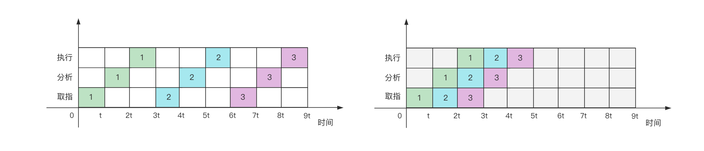
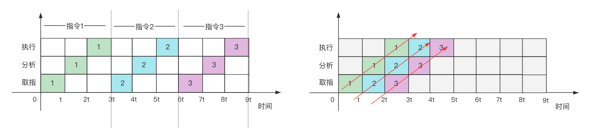

计算机系统 流水线技术
本文介绍计算机系统中采用的流水线技术，包括流水线相关的基础知识、工作原理、流水线技术对性能的改进、吞吐率、加速比和效率等相关的计算以及存在的问题等内容。

流水线技术简单介绍
流水线技术通过并行硬件(利用时间并行性，区别于空间并行性)来提高计算机系统的性能。
流水线技术把一项任务分解成若干项顺序执行的子任务，不同的子任务由不同的操作部件来负责执行，而这些部件可以同时并行工作，这项技术的关键在于重叠执行，通过这种方式可以在不增加硬件或者只增加少量硬件的前提下数倍的提升处理机运算速度。
流水线的分级
根据使用情况的不同，流水线可以分成三个级别：
（1）操作部件级流水线(运算符操作流水线) 将复杂的算术运算和逻辑运算组成流水线的工作方式。
（2）指令级流水线 把一条指令的执行过程分解成多个阶段，比如可以把某个指令分解为：取指令、分析指令、执行指令三个阶段。
（3）处理机间级流水线(宏流水线) 由 N(N>=2)个处理机通过存储器串行连接，每个处理机完成某项专门的任务，各个处理机所得到的结果需要存放到跟下一个处理机所共享的存储器里面。
流水线的分类
根据流水线的实际应用，可以从不同角度进行分类。
静态流水线：在同一时间内只能按照一种运算的连接方式进行工作（一定是单功能）。
动态流水线：在同一时间内允许按照多种不同运算的连接方式工作（一定是多功能）。
线性流水线：从输入到输出，每个功能段只允许经过一次，不存在反馈回路。
非线性流水线：从输入到输出，某些功能段将数次通过流水线，存在反馈回路，常用于递归调用。
单功能流水线：只能实现某种固定的功能，比如加法运算。
多功能流水线：各段可以进行不同的连接，通过不同的连接方式来实现不同的功能（资源利用率较高也更灵活，但控制更复杂）。
流水线的特点和工作原理
流水线中处理的必须是连续的任务。
在流水线每个操作部件的后面，都要有一个缓冲寄存器，这个缓冲寄存器用于保存本阶段的执行结果，以保证各个部件之间的速度是匹配的，以及各个部件独立、并行运行。
因为流水线的主要工作方式是把大的操作任务分解为多个独立的、小的操作部件，依靠多个操作部件并行工作来缩短程序执行时间的。因为流水线中各段的执行时间应该尽量相等，执行时间最长的一段将成为整个流水线的瓶颈。
上面这张图是我画的抽象之后的典型 5 级 CPU 执行流水线，但这张图其实没有办法表述清楚“多道工序同时执行”这个流水线技术最重要的特征，所以下面我通过时空图来描述流水线的工作。流水线的处理方向与之相对应的是多个任务按照顺序挨个执行。

我们假设某个处理机的执行指令分成三个阶段，分别是取指、分析和执行，假设每个阶段执行需要时间都是 t,那么上面左侧的图片描述的指令顺序执行的时空图，上面右侧的图片描述的是指令流水线执行的时空图。
我们可以通过上面的图示看出，顺序执行 3 条指令，需要的时间是 9t，流水线方式执行需要的时间是 5t，流水线采用的执行方式其实就是取指、分析和执行三个阶段部件在同时并发的工作，在第 1 条指令的执行阶段，同时分析第 2 条指令，取第 3 条指令。
如果不好理解的话，可以把这个场景类比为一个三个人 A\B\C 在对苹果进行操作的过程，其中 A 负责把苹果放入到水槽中，B 负责清洗水槽中的苹果，C 负责把水槽中的苹果捞起来装到袋子中，每次只能操作一个苹果。严格的顺序执行，类似于 A 在做“把第一个苹果放入到水槽中”这个动作的时候，B 和 C 处于等待的状态，当这个动作完成后，B 执行“清洗水槽中的这个苹果”这个操作，此时 A 处于无事可做的状态，C 处于等待的状态，当清洗完成后，C 开始执行“把水槽中的苹果捞起来装到袋子中”这个动作，此时 A 和 B 处于空闲的状态。
假设有 n 个苹果需要处理，每个苹果处理的三个阶段的单位时间都是 t，那么：
顺序执行的工作方式需要的时间为：n x 3 x t
流水线执行工作方式需要的时间可以这样计算：3 x t + (n-1) x t
这里在进行计算的时候，其实我们涉及到了多个参与量，它们包括指令的数量、指令的执行阶段、每个指令执行阶段需要的单位时间，在上面的案例中，指令的数量为 3 条，指令的执行阶段为 3 个，每个指令执行阶段需要的单位时间我们假设都是相等的。接下来，我们来看一个稍微复杂点的情况。
1 | 假设： |
我们来看个更复杂的情况
1 | 假设： |
备注：Tk = n(t1 + t2 + t3 +..tk) + (n -1)max(t1,t2,···tk)
由此，我们可以总结出一个指令流水线完成 n 个任务所需要总时间的计算公式：
1 | $$ T_k = \sum_{i=1}^kt_i + (n -1 ) max(t_1,t_2,···，t_k) $$ |